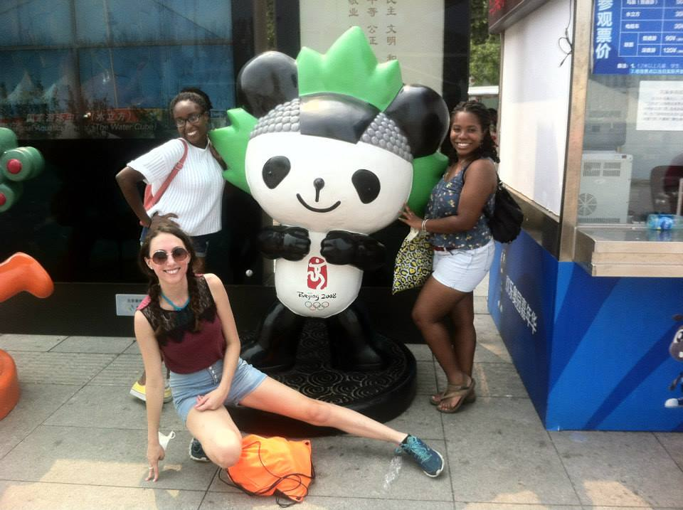

Research Undergraduate Intern (REU) Summer of 2014
I worked in the Natural Language Programming (NLP) and Natural Language Generation Group (NLG)
I developed the NLP and NLG the Virtual Human Neighbor , a virtual directory designed for internal use at USC to bring people closer together.
Personal Highlights: This was my first internship, my first time in California and my first time living on my own!
EventBank

Backend Software Engineering Intern, Summer of 2015
EventBank is a SaaS company that helps corporations to build their own websites, connect with their customers, and plan events.
At the time, the backend team was a team of 3. I was tasked with solving the recent bugs, most notably, an issue with malformatted email templates.
Personal Highlights: This was my first-time working in Mandarin (and it wouldn't be my last!). I also fostered my interest in being the bridge between the business and technical as language was not the only barrier between the two groups.
Goldman Sachs, Hong Kong
Technology Summer Analyst, Summer of 2016
I was the only developer in the project management group Cross-Division (XDIV) as the team transitioned to a more technical role.
I created an automated sign-off system, a long-term ask from the project management team. I also helped to start the design of a new data lake.
Personal Highlights: I absolutely loved the city of Hong Kong. I also learned that I had a knack for "psuedo-tech" roles where I could stand in as the sole developer on the team to gather requirements AND implement solutions.
Full-Time
Avanade
Technical Business Analyst, June 2017 - January 2019
I was in the Business Applications (BizApps) sector of Avanade aligned with Microsoft Dynamics 365 CRM
Depending on the project I held roles as a project manager, business analyst, and developer. My clients ranged from insurance, healthcare, and luxury jewelry.
Personal Highlights: At Avanade, I learned how much I liked solving technical problems, but I also enjoyed the client-facing side of my role.
Palantir Technologies
Deployment Strategist, February 2019 to August 2020
I worked with clients across APAC (China, Indonesia, and Singapore) as part of Skywise, Palantir's venture with Airbus.
In the United States, I worked with a large railroad company in their Mechanical, Fuel and Engineering teams to develop tools to help guide their decision making.
Personal Highlights: Palantir showed me that I loved to solve all different kinds of problems. I started to grow interested in product-facing development.